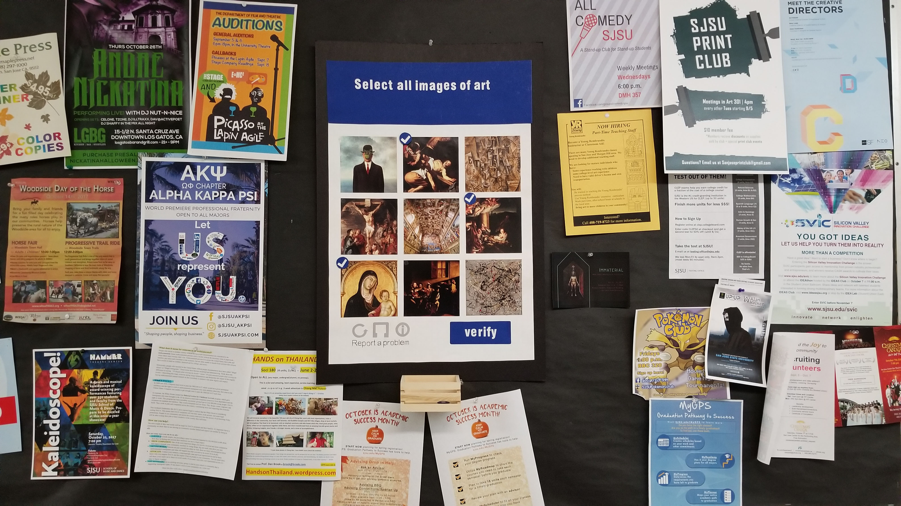
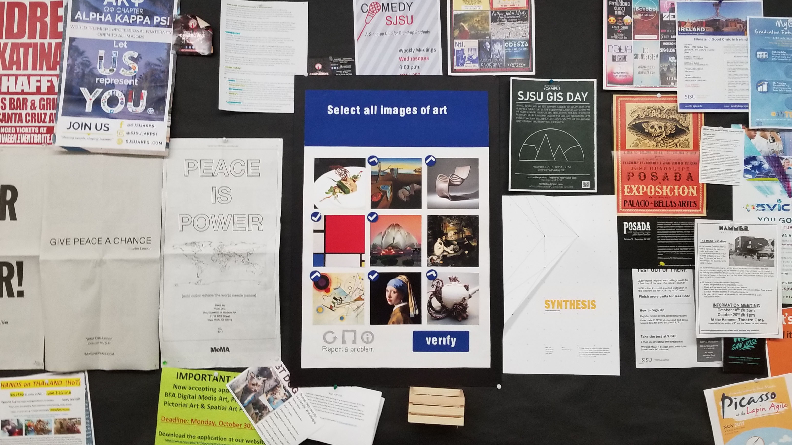
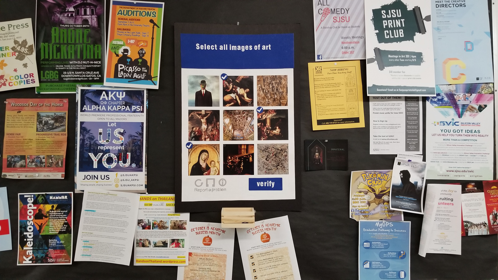
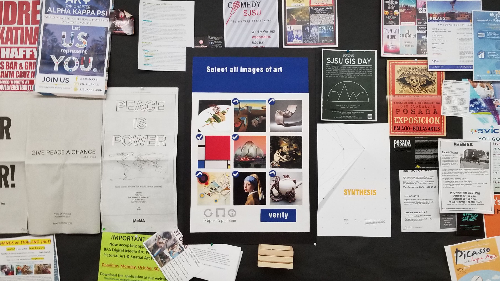
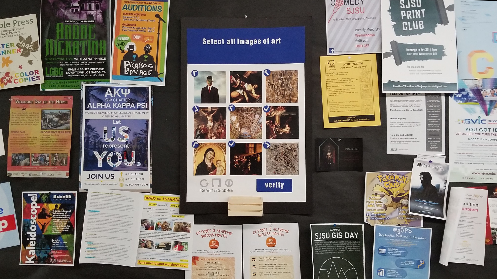
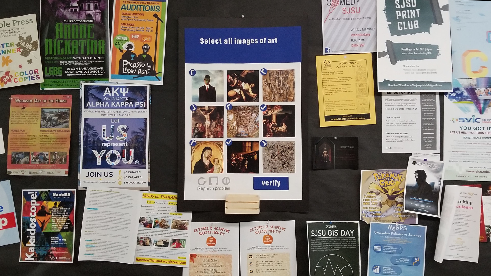

 

"Are You Human?"
Net Art
2018
The question “Are you human?” automatically makes me think of the Captcha. And you can find these on a lot of websites. They are basically algorithms, which weed out any bots from humans and make sure that they don’t enter. I wanted to
take this to the physical world. I focused on the image selecting Captcha. I would create a template of different formats and laminate it. My first set of physical captchas involved the on going question "What is art?". Instead of asking you
to select images of stop signs or cars, it asked you to "Select all images of art". It included different forms of art, some too well known like the Mona Lisa, some not to well known, and forms of art that are in question. Like, if it's functional,
is it considered art? Or, if it's made for the purpose of religion, is that a form of art or is it just a function of depicting God for the followers?
I placed them around campus and allowed the audience to decide. By the end of the first week in the art building, Almost all of the options were selected. In the business building, only the most well known ones were checked off.
It is always interesting to see the changes of art, and the changes in the idea of what art is during our time now.